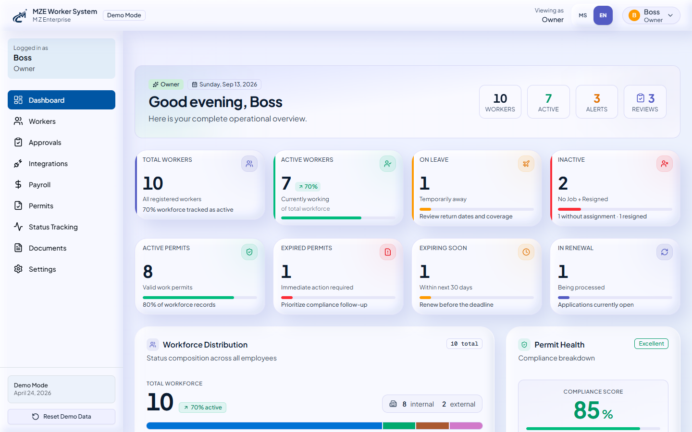
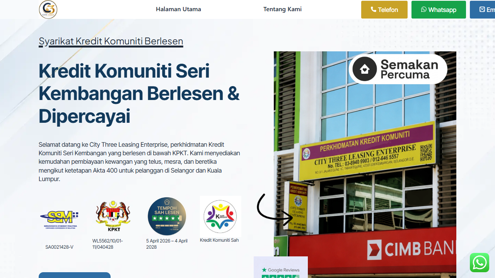
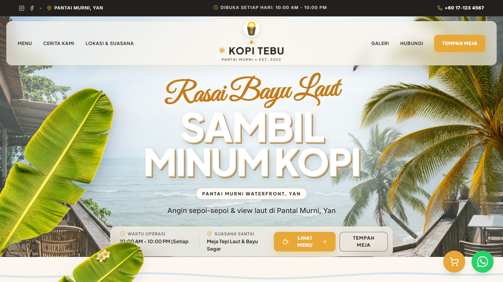

03 / Selected work
Useful things.
Shipped.
Five recent builds, from public-facing sites to an operational system. Each screen is real work, not a placeholder.





More projects in the workshop archiveView all work ↘